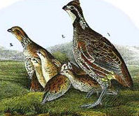
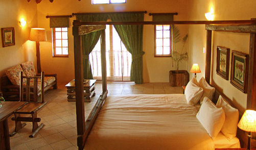

| Home | accomodation | location | Mail us | |
The Partridge HotelAccomodation Relax in the comfort of our double/twin bedded en-suite rooms or one of 5 ground floor suites accommodating from 2 – 5 guests. The ground floor suites offer access for all and have shower/wet rooms. Your enjoyment of our accommodation is at the top of our agenda so all rooms are equipped with hair dryers and TV with freeview channels. Soft luxury linen, throws and extra pillows to guarantee a comfortable stay and a great night's sleep. All our bathrooms provide shampoos and soaps and other toiletries are available such as toothpaste, sewing kits, etc. As a guest of the hotel you are invited to use the indoor heated hydro-therapy pool, sauna and spa facilities which may be booked at the reception. We also have a small range of gifts available to purchase from the hotel. To make your stay more memorable we can offer a choice of extras: Boxes of Chocolates. A bouquet of Flowers. And to make it extra special on arrival Champagne on ice. Current Tariffs: Bed and Breakfast ensuite, single occupancy : £65 - £75 per person (B&B). Bed and Breakfast ensuite, double occupancy : £44 - £56 pp (B&B). Family and Large suites with extra sleeping : Ranging from £99 - £160 (B&B) per night. Dinner Bed & Breakfast and Short Break rates on application. Dogs are welcome to stay at £5.00 per night. Cots available at £8 per night. Member of bnbselect Member of HotelsCombined Member of Bedandbreakfastsearcher |